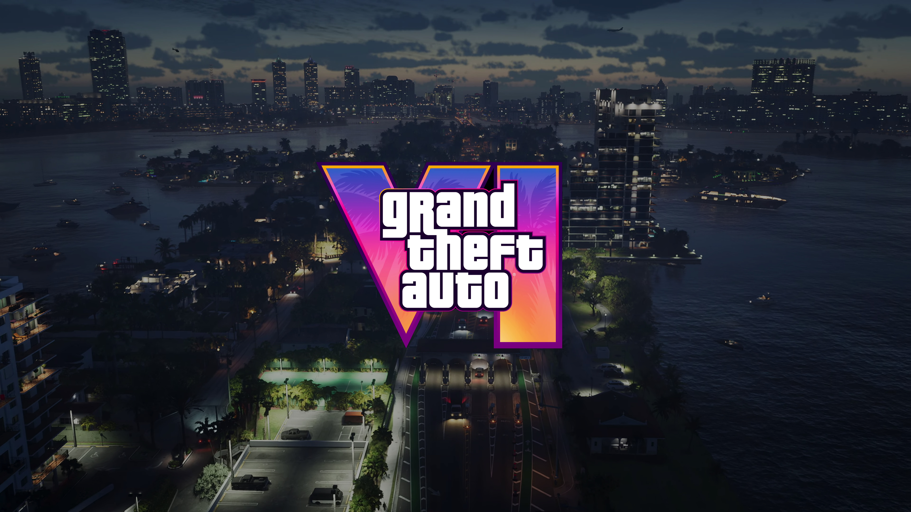
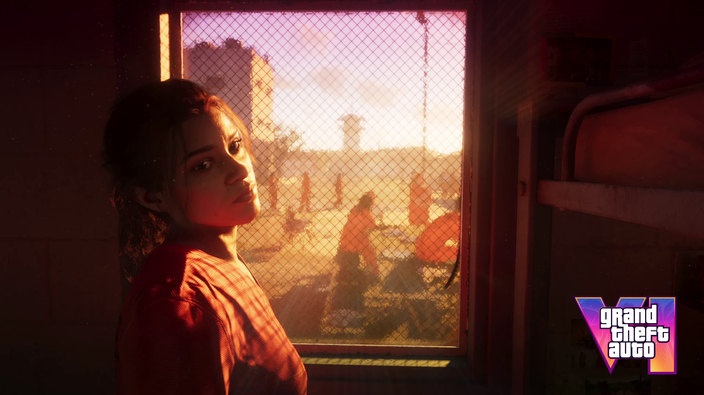
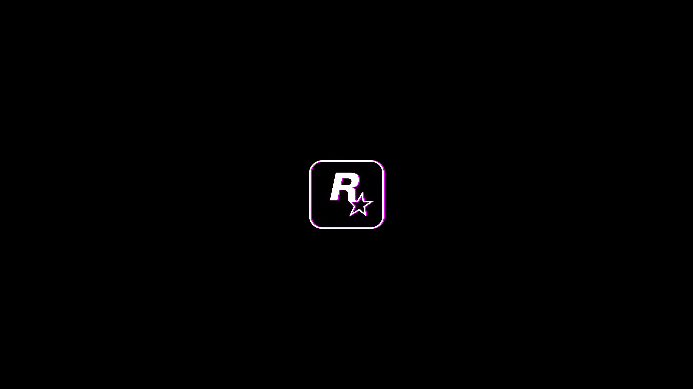

Grand Theft Auto
vice city
EXPLORE O MUNDO DO GTA VI

Grand Theft Auto VI é um futuro jogo eletrônico de ação-aventura desenvolvido pela Rockstar Studios e publicado pela Rockstar Games. Será o oitavo título principal da franquia Grand Theft Auto, sendo o sucessor de Grand Theft Auto V, e o décimo sexto jogo eletrônico da série.
Data de lançamento
Contrariando as expectativas dos fãs, GTA 6 será lançado apenas em 2025 com versões para PlayStation 5 (PS5), Xbox Series S e Xbox Series X. Uma data de estreia ainda não foi revelada pela desenvolvedora, no entanto. É de se esperar que mais informações sejam divulgadas somente ao longo de 2024.
A fascinating aspect is their natural insulation: layers of blubber. This built-in warmth mechanism allows them to thrive in various water temperatures. Picture these creatures gliding beneath the water's surface – a seamless dance with currents, their streamlined bodies moving with fluidity and elegance. It's a testament to nature's adaptability and the awe-inspiring beauty of aquatic life.
Em qual cidade se passa GTA 6?
Orla de Miami (South Beach) Não apenas há mais pessoas na areia e na água, como também existe uma grande variedade de corpos e diferentes atividades, dando a impressão de um local realmente vivo.
Lucia e Jason

O trailer confirmou os rumores de que GTA 6 contará com dois protagonistas jogáveis: Lucia e Jason, que formam um casal. A dupla atua como parceiros de crime e, em um primeiro momento, aparecem assaltando diferentes lojas de conveniência.
Rockstar Games
Rockstar Games, Inc. é uma produtora e publicadora de jogos eletrônicos fundada em Dezembro de 1998. Conhecida por ter criado grandes nomes dos jogos eletrônicos, a Rockstar é criadora das famosas séries Grand Theft Auto, Red Dead, Midnight Club, Bully, Max Payne e Manhunt.